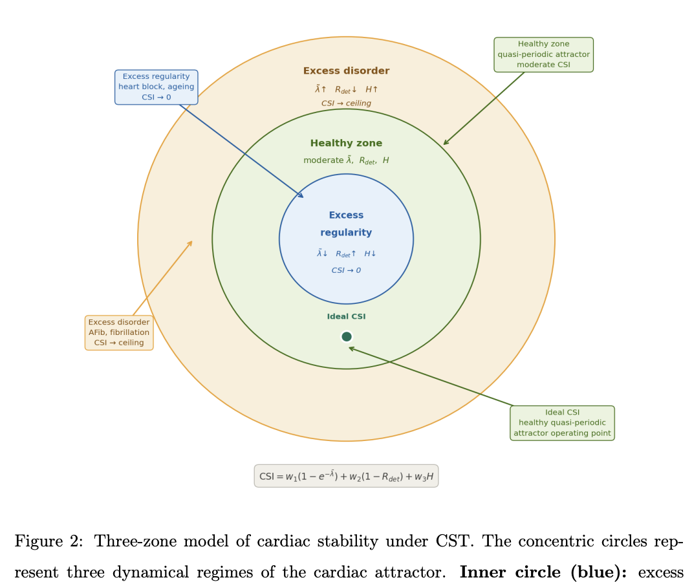
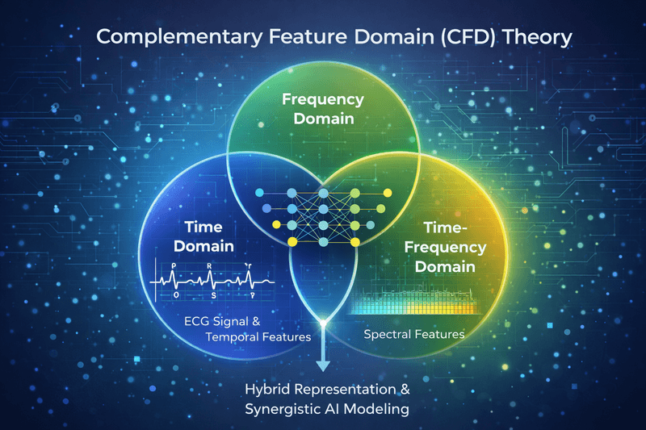
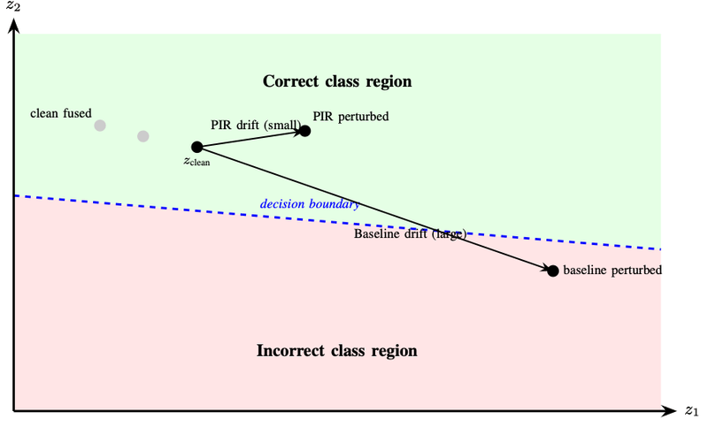
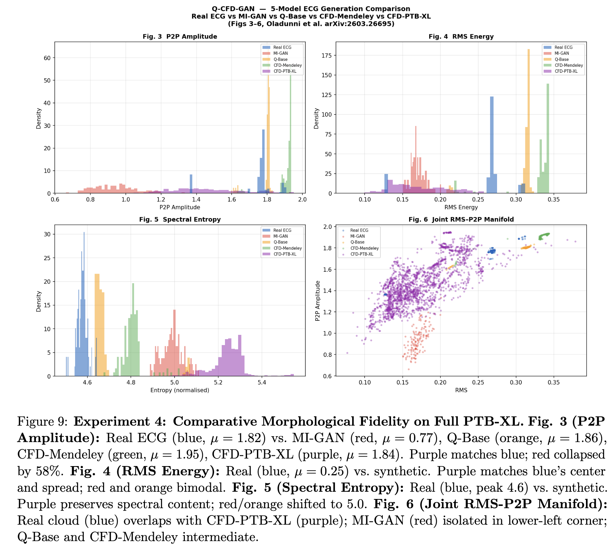
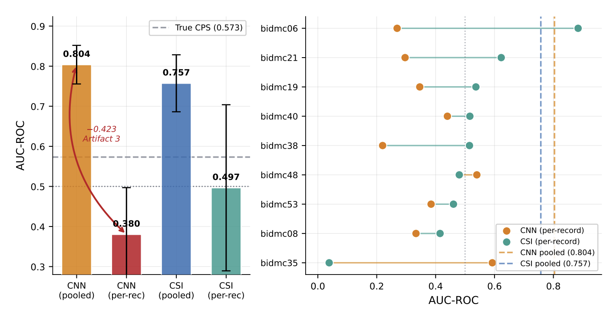
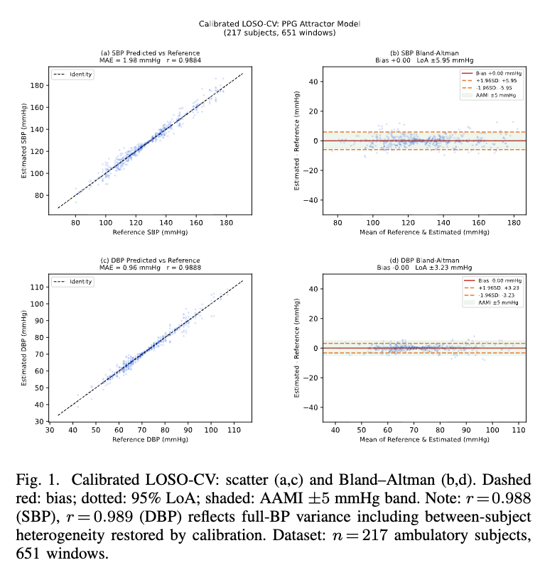

Theoretical foundations and practical architectures for trustworthy AI in healthcare

Foundational framework that axiomatically grounds cardiovascular health as maintenance of moderate dynamical complexity on a bounded quasi-periodic cardiac attractor. CST derives the Cardiac Stability Index (CSI) from three complementary geometric properties: largest Lyapunov exponent, recurrence determinism, and signal entropy.
CSI powers the HeartSpan Score in HeartVibe AI and enables longitudinal cardiac wellness monitoring via smartphone photoplethysmography (PPG). All subsequent theories extend and operationalize CST for specific applications.

CFD theory formalizes how time-, frequency-, and time-frequency ECG representations carry complementary rather than redundant diagnostic information. This theory reveals that these three domains capture different physiological patterns and that multimodal models perform best when they preserve and balance this complementarity.
Our work shows that fusion architectures that explicitly respect domain-specific information improve accuracy, robustness to noise, and data efficiency compared to simple feature stacking.

When should a model change its mind? PIT answers this fundamental question in trustworthy AI by defining robustness in terms of physiologic drift—the natural variability in rhythm, amplitude, and morphology that should not flip a model's prediction.
We develop metrics and training strategies that keep latent representations stable under benign perturbations while remaining sensitive to truly pathological changes. This framework ensures AI systems are robust in real clinical environments.
The EAT framework integrates saliency maps, stability analysis, and clinician-aligned explanations to rigorously evaluate whether model predictions are medically plausible. Rather than optimizing for black-box accuracy alone, EAT emphasizes interpretability as a first-class design objective.
We study how explanations change under noise and domain shifts, design visualization tools that highlight which parts of the ECG models truly rely on, and ensure clinicians can interrogate and refine model decisions in practice.

CPGT introduces a quantum-inspired generative model (Q-CFD-GAN) for multimodal ECG synthesis. Unlike traditional GANs that may collapse domain-specific information, CPGT enforces explicit complementarity constraints during generation.
The result is synthetic ECG data that preserves the time-frequency-frequency domain structure discovered by CFD Theory, enabling data augmentation that strengthens downstream model robustness without sacrificing diagnostic information fidelity.

ADT formalizes how cardiac signal information partitions across geometric domains of the cardiac attractor. The Domain Sufficiency Theorem establishes which attractor properties are necessary and sufficient for specific clinical predictions.
Validated on 176,742 PPG segments across 4 datasets with AUC = 0.757 and NPV = 0.966. ADT serves as the theoretical foundation for AVCT (cuffless blood pressure estimation) and provides a principled framework for extending CSI-based monitoring to multimodal biomarkers.

AVCT extends ADT to link cardiac attractor geometry directly to blood pressure. The theory formalizes how vascular mechanics couple to cardiac dynamics, enabling single-calibration cuffless BP estimation from smartphone PPG.
Patent status: USPTO provisional patent application submitted to Morgan State University Office of Technology Transfer (2026). AVCT demonstrates that accurate BP monitoring requires only one initial calibration measurement and knowledge of the patient's attractor geometry—transforming continuous cardiac monitoring into continuous hemodynamic assessment.
PTT is the temporal extension of PECT, answering a fundamental question: What constitutes a valid physiologic trajectory versus a meaningful departure from one? Using Kalman state-space modeling, PTT defines per-individual admissible corridors for the Cardiac Stability Index.
PECT establishes an energy-based criterion for concept drift detection, extending CST's temporal framework. The theory predicts that meaningful drift in a model's latent representation should scale proportionally with changes in the physiologic signal's energy.
This provides a principled, energy-constrained approach to distinguishing benign measurement noise from true physiologic change—critical for reliable longitudinal cardiac monitoring and the foundation for Physiologic Trajectory Theory.
ECG and PPG-based prediction of cardiac abnormalities, arrhythmias, and hypertrophy with high sensitivity and specificity. Longitudinal trajectory analysis for early detection of cardiac drift before clinical manifestation.
AVCT-based framework linking cardiac attractor geometry to blood pressure. Single-calibration BP monitoring from photoplethysmography. USPTO provisional patent submitted to Morgan State University Office of Technology Transfer.
Addressing demographic bias in PPG-based monitoring across Fitzpatrick skin tones (types 1-6). IRB-submitted study collecting longitudinal smartphone PPG data to ensure equitable risk stratification across all populations.